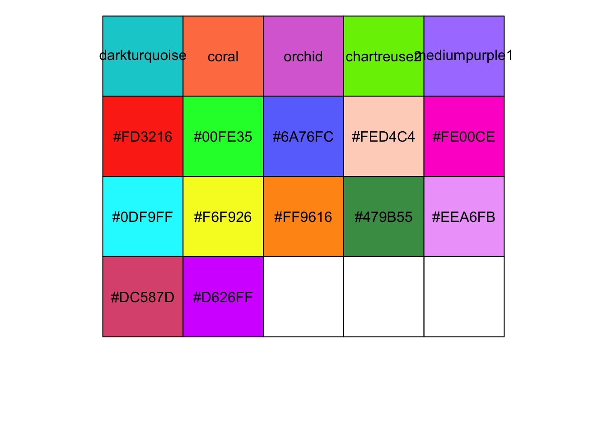
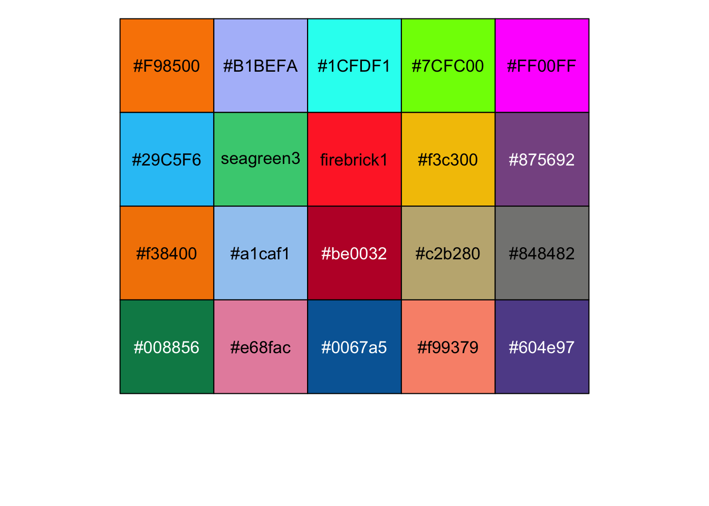
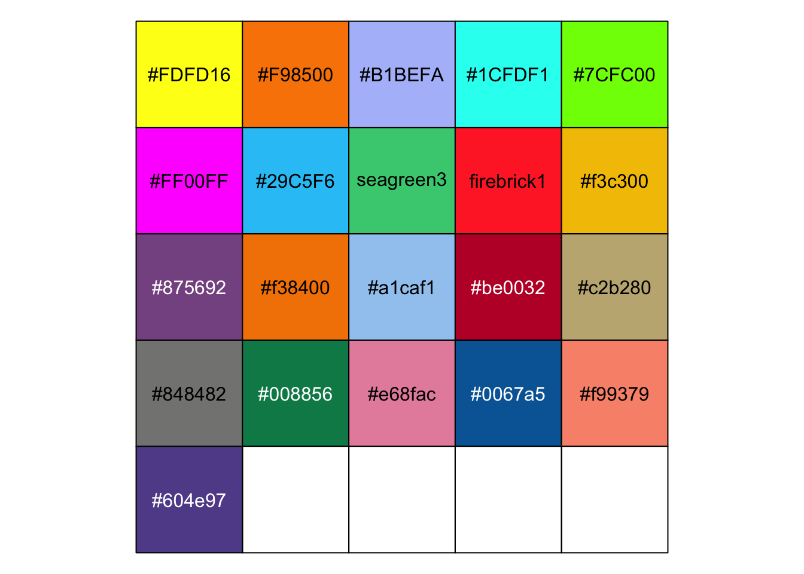
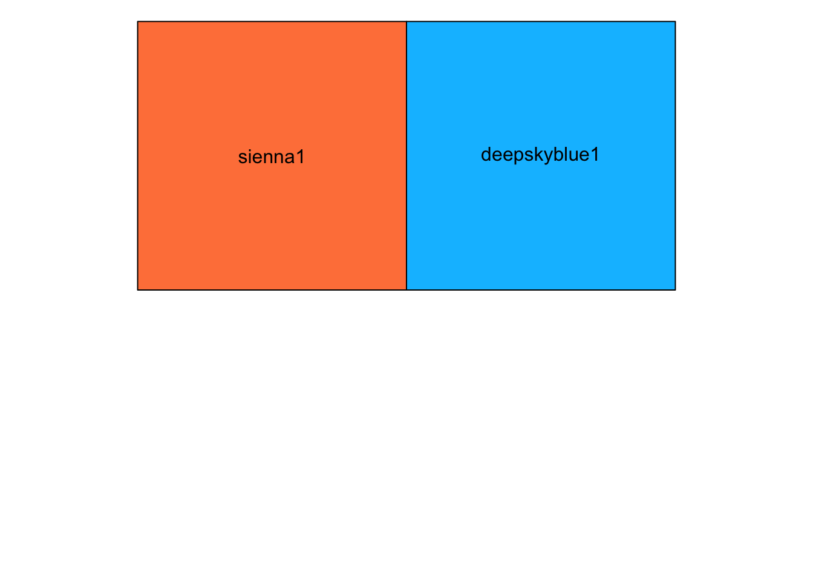
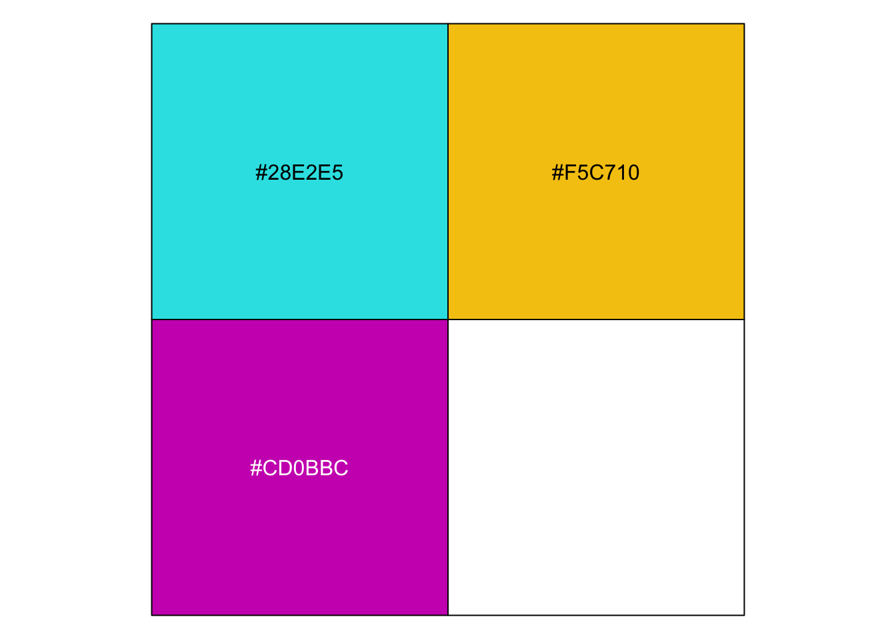
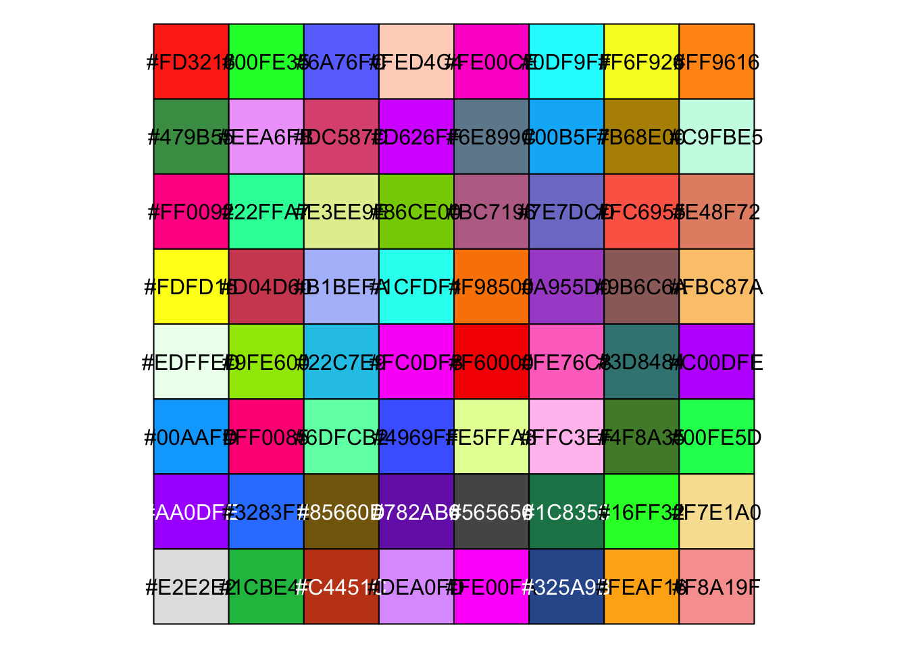
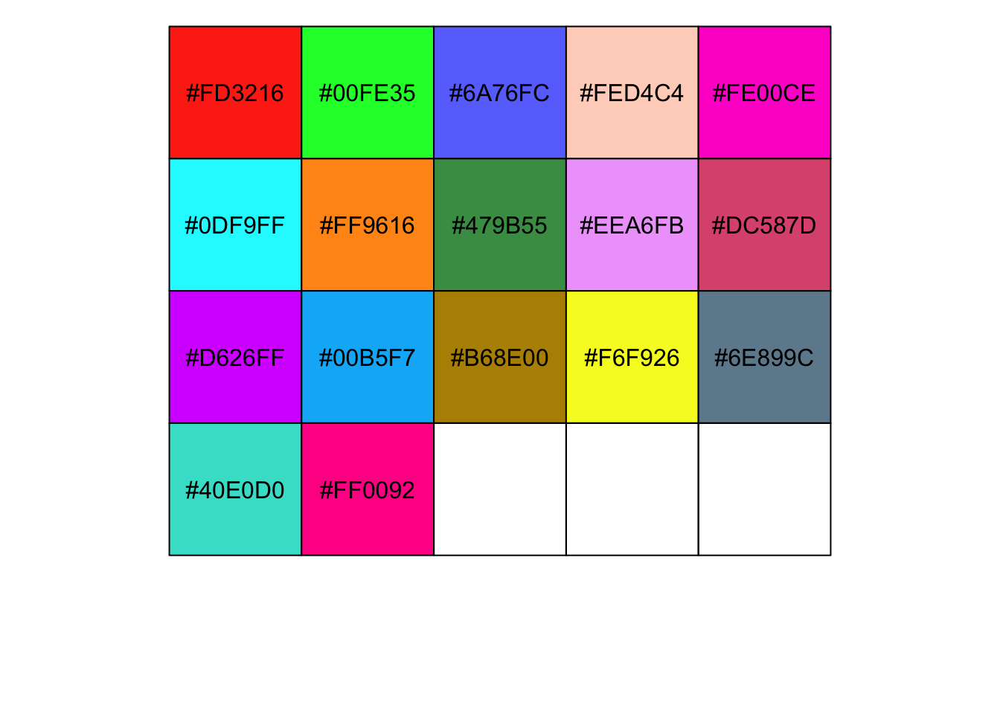
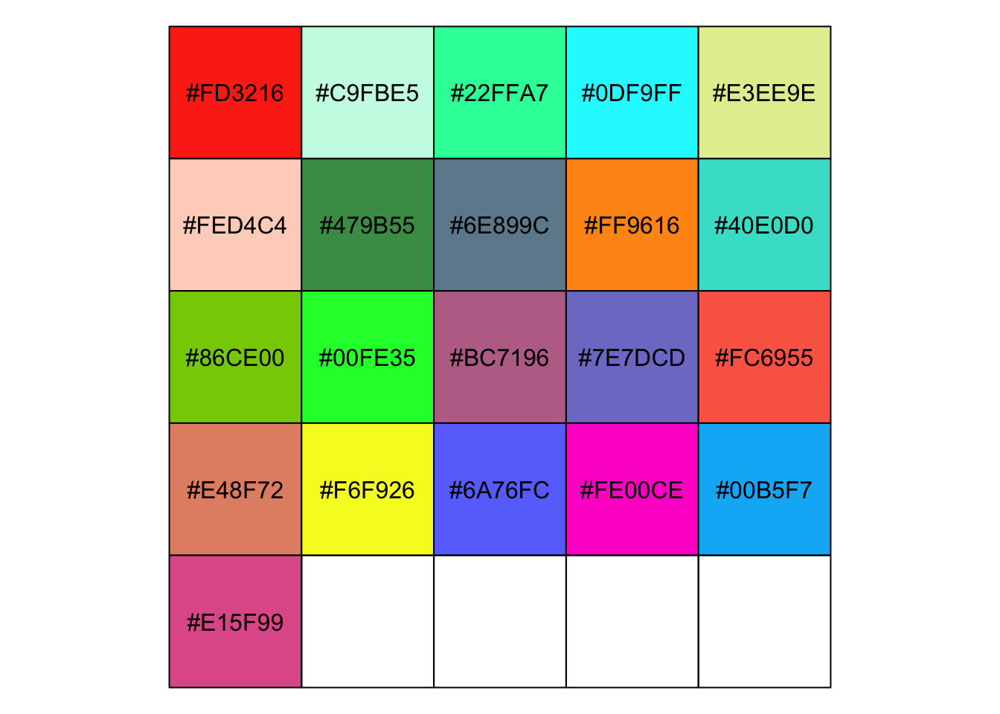
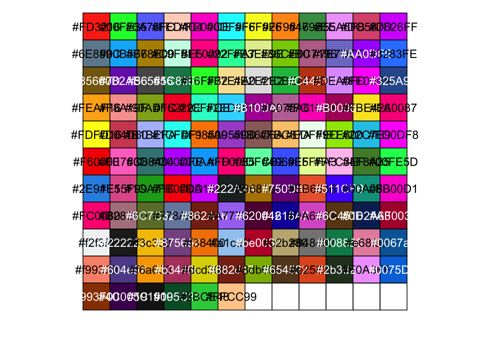

Generate colour schemes
Calandra Grima
2026-08-05
Last updated: 2026-08-05
Checks: 7 0
Knit directory: amniosinglecell/
This reproducible R Markdown analysis was created with workflowr (version 1.7.2). The Checks tab describes the reproducibility checks that were applied when the results were created. The Past versions tab lists the development history.
Great! Since the R Markdown file has been committed to the Git repository, you know the exact version of the code that produced these results.
Great job! The global environment was empty. Objects defined in the global environment can affect the analysis in your R Markdown file in unknown ways. For reproduciblity it’s best to always run the code in an empty environment.
The command set.seed(20220125) was run prior to running
the code in the R Markdown file. Setting a seed ensures that any results
that rely on randomness, e.g. subsampling or permutations, are
reproducible.
Great job! Recording the operating system, R version, and package versions is critical for reproducibility.
Nice! There were no cached chunks for this analysis, so you can be confident that you successfully produced the results during this run.
Great job! Using relative paths to the files within your workflowr project makes it easier to run your code on other machines.
Great! You are using Git for version control. Tracking code development and connecting the code version to the results is critical for reproducibility.
The results in this page were generated with repository version 6e1f995. See the Past versions tab to see a history of the changes made to the R Markdown and HTML files.
Note that you need to be careful to ensure that all relevant files for
the analysis have been committed to Git prior to generating the results
(you can use wflow_publish or
wflow_git_commit). workflowr only checks the R Markdown
file, but you know if there are other scripts or data files that it
depends on. Below is the status of the Git repository when the results
were generated:
Ignored files:
Ignored: .DS_Store
Ignored: .Rhistory
Ignored: .Rproj.user/
Ignored: analysis/generate_site.R
Ignored: analysis/knit_docs.R
Ignored: analysis/run_as_job.R
Ignored: analysis/sccomp_draws_files/
Ignored: celltypist/output_Gerli_et_al_2024_fetal_organ/
Ignored: celltypist/output_Gerli_et_al_2024_pan_fetal/
Ignored: data/
Ignored: excluded_analysis/
Ignored: output/
Ignored: renv/.DS_Store
Ignored: renv/library/
Ignored: renv/staging/
Ignored: sccomp_draws_files/
Untracked files:
Untracked: Paper Draft - Claude - Single-cell RNA-seq of amniotic fluid - gaining unique insight into foetal development.docx
Untracked: claude_log/
Note that any generated files, e.g. HTML, png, CSS, etc., are not included in this status report because it is ok for generated content to have uncommitted changes.
These are the previous versions of the repository in which changes were
made to the R Markdown
(analysis/AmnioSC_additional_generate_colour_schemes.Rmd)
and HTML
(docs/AmnioSC_additional_generate_colour_schemes.html)
files. If you’ve configured a remote Git repository (see
?wflow_git_remote), click on the hyperlinks in the table
below to view the files as they were in that past version.
| File | Version | Author | Date | Message |
|---|---|---|---|---|
| Rmd | 6e1f995 | Calandra Grima | 2026-08-05 | wflow_publish(here("analysis", "AmnioSC_additional_generate_colour_schemes.Rmd")) |
| html | 5ffae3e | Calandra Grima | 2026-08-04 | Build site. |
| Rmd | 30d6fb3 | Calandra Grima | 2026-08-04 | wflow_publish(here("analysis", "AmnioSC_additional_generate_colour_schemes.Rmd")) |
| Rmd | aa1f7f0 | calandra.grima | 2026-06-30 | Fix up figures |
| html | 267b837 | Calandra Grima | 2025-04-14 | Build site. |
| html | 1146b0c | Calandra Grima | 2025-04-03 | Build site. |
| Rmd | c97e9fa | Calandra Grima | 2025-04-03 | wflow_publish(here("analysis", "AmnioSC_additional_generate_colour_schemes.Rmd")) |
| html | e3a8012 | Calandra Grima | 2025-03-25 | Build site. |
| Rmd | 8e3d9f2 | Calandra Grima | 2025-03-25 | wflow_publish(here("analysis", "AmnioSC_additional_generate_colour_schemes.Rmd")) |
| html | 53f3744 | Calandra Grima | 2025-01-08 | Build site. |
| Rmd | 4d08540 | Calandra Grima | 2024-12-06 | wflow_publish(here("analysis", "AmnioSC_additional_generate_colour_schemes.Rmd")) |
| html | d24b297 | Calandra Grima | 2024-07-17 | Build site. |
| Rmd | 7193433 | Calandra Grima | 2024-07-17 | wflow_publish(here("analysis", "AmnioSC_additional_generate_colour_schemes.Rmd")) |
| html | 5329ee5 | Calandra Grima | 2024-06-19 | Build site. |
| Rmd | 2ea773e | Calandra Grima | 2024-06-19 | wflow_publish(here("analysis", "AmnioSC_additional_generate_colour_schemes.Rmd")) |
| html | 3696e78 | Calandra Grima | 2024-05-15 | Build site. |
| Rmd | c8b6568 | Calandra Grima | 2024-05-15 | wflow_publish(here("analysis", "AmnioSC_additional_generate_colour_schemes.Rmd")) |
| html | f6ca4f7 | Calandra Grima | 2024-05-01 | Build site. |
| Rmd | e2e6156 | Calandra Grima | 2024-05-01 | wflow_publish(here("analysis", "AmnioSC_additional_generate_colour_schemes.Rmd")) |
| html | a918781 | Calandra Grima | 2024-02-15 | Build site. |
| Rmd | 1e0b754 | Calandra Grima | 2024-02-15 | Update to handle use of two celltypist references |
| html | 6f6c536 | Calandra Grima | 2024-01-23 | Build site. |
| Rmd | 4210705 | Calandra Grima | 2024-01-23 | wflow_publish(here("analysis", "AmnioSC_additional_generate_colour_schemes.Rmd")) |
| html | b153ff5 | Calandra Grima | 2024-01-16 | Build site. |
| Rmd | 50c3756 | Calandra Grima | 2024-01-16 | wflow_publish(here("analysis", "AmnioSC_additional_generate_colour_schemes.Rmd")) |
| html | 1fd3cb4 | Calandra Grima | 2023-11-29 | Build site. |
| Rmd | eaca5ce | Calandra Grima | 2023-11-29 | wflow_publish(here("analysis", "AmnioSC_additional_generate_colour_schemes.Rmd")) |
| html | d64ca80 | Calandra Grima | 2023-09-15 | Build site. |
| Rmd | d3b8e90 | Calandra Grima | 2023-09-15 | wflow_publish(here("analysis", "AmnioSC_additional_generate_colour_schemes.Rmd")) |
| html | 9c2997a | Calandra Grima | 2023-09-15 | Build site. |
| Rmd | a964d0a | Calandra Grima | 2023-09-15 | wflow_publish(here("analysis", "AmnioSC_additional_generate_colour_schemes.Rmd")) |
| html | f7f87a2 | Calandra Grima | 2023-09-11 | Build site. |
| Rmd | 999bcf4 | Calandra Grima | 2023-09-11 | wflow_publish(here("analysis", "AmnioSC_additional_generate_colour_schemes.Rmd")) |
| html | b503dae | Calandra Grima | 2023-08-31 | Build site. |
| Rmd | 9f55af6 | Calandra Grima | 2023-08-31 | wflow_publish(here("analysis", "AmnioSC_additional_generate_colour_schemes.Rmd")) |
| html | ee48485 | Calandra Grima | 2023-08-31 | Build site. |
| Rmd | 3f86e66 | Calandra Grima | 2023-08-31 | wflow_publish(here("analysis", "AmnioSC_additional_generate_colour_schemes.Rmd")) |
| html | 2316357 | Calandra Grima | 2022-12-20 | Build site. |
| Rmd | 2be4f93 | Calandra Grima | 2022-12-20 | wflow_publish(here("analysis", "AmnioSC_additional_generate_colour_schemes.Rmd")) |
| html | cf53df2 | Calandra Grima | 2022-12-13 | Build site. |
| Rmd | e617f46 | Calandra Grima | 2022-12-13 | wflow_publish(here("analysis", "AmnioSC_additional_generate_colour_schemes.Rmd")) |
| Rmd | 23c66b9 | Calandra Grima | 2022-12-12 | Switching from Azimuth to Celltypist |
| html | fa564f9 | Calandra Grima | 2022-11-18 | Build site. |
| Rmd | 052c89f | Calandra Grima | 2022-11-18 | wflow_publish(here("analysis", "AmnioSC_additional_generate_colour_schemes.Rmd")) |
| html | 5647de7 | Calandra Grima | 2022-10-25 | Build site. |
| html | 169ff5c | Calandra Grima | 2022-10-25 | Build site. |
| Rmd | 82e9955 | Calandra Grima | 2022-10-25 | wflow_publish(here("analysis", "AmnioSC_additional_generate_colour_schemes.Rmd")) |
| html | 327a3b3 | Calandra Grima | 2022-10-25 | Build site. |
| Rmd | 2df7849 | Calandra Grima | 2022-10-25 | wflow_publish(here("analysis", "AmnioSC_additional_generate_colour_schemes.Rmd")) |
| html | a6c66d6 | Calandra Grima | 2022-09-06 | Build site. |
| Rmd | 1661d66 | Calandra Grima | 2022-09-06 | wflow_publish(here("analysis", "AmnioSC_additional_generate_colour_schemes.Rmd")) |
| html | ec80242 | Calandra Grima | 2022-09-06 | Build site. |
| html | 4a2721b | Calandra Grima | 2022-09-06 | Build site. |
| Rmd | bb45289 | Calandra Grima | 2022-09-06 | wflow_publish(here("analysis", "AmnioSC_additional_generate_colour_schemes.Rmd")) |
| html | b02e722 | Calandra Grima | 2022-08-09 | Build site. |
| Rmd | 1f067c7 | Calandra Grima | 2022-08-09 | wflow_publish(here("analysis", "AmnioSC_additional_generate_colour_schemes.Rmd")) |
| html | 81daa48 | Calandra Grima | 2022-08-09 | Build site. |
| Rmd | d33f3c9 | Calandra Grima | 2022-08-09 | wflow_publish(here("analysis", "AmnioSC_additional_generate_colour_schemes.Rmd")) |
| html | ac6cea8 | Calandra Grima | 2022-08-09 | Build site. |
| Rmd | f514bea | Calandra Grima | 2022-08-09 | wflow_publish(here("analysis", "AmnioSC_additional_generate_colour_schemes.Rmd")) |
| html | 524d07d | Calandra Grima | 2022-08-09 | Build site. |
| Rmd | 9c0bdfc | Calandra Grima | 2022-08-09 | wflow_publish(here("analysis", "AmnioSC_additional_generate_colour_schemes.Rmd")) |
| Rmd | 43ccdb7 | Calandra Grima | 2022-08-02 | Continuing work on the integrated epithelial reference dataset |
| Rmd | 0a15e1f | Calandra Grima | 2022-07-19 | Finalise workflow for integration and epithelial cell subclustering |
| html | 0a15e1f | Calandra Grima | 2022-07-19 | Finalise workflow for integration and epithelial cell subclustering |
1 Load libraries
library(Polychrome)
library(scales)
library(SingleCellExperiment)
library(Seurat)
library(stringr)
library(here)combined_metadata <- read.csv(here("data", "Gerli_et_al_2024", "combined_metadata.csv"))
rownames(combined_metadata) <- combined_metadata$Sample2 Datasets
ALL_DATASETS <- c("dataset_01", "dataset_02", "dataset_03", "dataset_04",
"dataset_05")
ALL_DATASETS <- factor(ALL_DATASETS, levels = ALL_DATASETS)
ALL_DATASETS_COLOURS <- c("darkturquoise", "coral", "orchid", "chartreuse2",
"mediumpurple1")
names(ALL_DATASETS_COLOURS) <- levels(ALL_DATASETS)
GERLI_DATASETS <- unique(setdiff(combined_metadata$dataset_batch, ALL_DATASETS))
GERLI_DATASETS_COLOURS <- light.colors(n = length(GERLI_DATASETS))
names(GERLI_DATASETS_COLOURS) <- GERLI_DATASETS
ALL_DATASETS_COLOURS <- c(ALL_DATASETS_COLOURS, GERLI_DATASETS_COLOURS)
show_col(ALL_DATASETS_COLOURS)
| Version | Author | Date |
|---|---|---|
| 5ffae3e | Calandra Grima | 2026-08-04 |
| 267b837 | Calandra Grima | 2025-04-14 |
| e3a8012 | Calandra Grima | 2025-03-25 |
| 53f3744 | Calandra Grima | 2025-01-08 |
| f6ca4f7 | Calandra Grima | 2024-05-01 |
| 9c2997a | Calandra Grima | 2023-09-15 |
| f7f87a2 | Calandra Grima | 2023-09-11 |
| b503dae | Calandra Grima | 2023-08-31 |
| a6c66d6 | Calandra Grima | 2022-09-06 |
| 4a2721b | Calandra Grima | 2022-09-06 |
| 524d07d | Calandra Grima | 2022-08-09 |
saveRDS(ALL_DATASETS_COLOURS, here("data", "colours", "ALL_DATASETS_COLOURS.rds"))3 Donors
ALL_DONORS <- c("1AF", "2AF", "3AF", "4AF", "5AF", "6AF", "7AF", "8AF")
ALL_DONORS <- factor(ALL_DONORS, levels = ALL_DONORS)
# some colours from sky.colours()
ALL_DONORS_COLOURS <- c("#F98500", "#B1BEFA", "#1CFDF1", "#7CFC00", "#FF00FF", "#29C5F6", "seagreen3", "firebrick1")
names(ALL_DONORS_COLOURS) <- levels(ALL_DONORS)
ALL_DONORS.PAPER <- c("AF_1", "AF_2", "AF_3", "AF_4", "AF_5", "AF_6", "AF_7")
ALL_DONORS_COLOURS.PAPER <- ALL_DONORS_COLOURS[-3]
names(ALL_DONORS_COLOURS.PAPER) <- ALL_DONORS.PAPER
GERLI_SAMPLES <- unique(setdiff(combined_metadata$Sample, ALL_DONORS))
GERLI_SAMPLES_COLOURS <- kelly.colors(n = length(GERLI_SAMPLES) + 2)[3:(length(GERLI_SAMPLES) + 2)]
names(GERLI_SAMPLES_COLOURS) <- GERLI_SAMPLES
ALL_DONORS_COLOURS <- c(ALL_DONORS_COLOURS, GERLI_SAMPLES_COLOURS)
ALL_DONORS_COLOURS.PAPER <- c(ALL_DONORS_COLOURS.PAPER, GERLI_SAMPLES_COLOURS)
show_col(ALL_DONORS_COLOURS)
| Version | Author | Date |
|---|---|---|
| 5ffae3e | Calandra Grima | 2026-08-04 |
| 267b837 | Calandra Grima | 2025-04-14 |
| e3a8012 | Calandra Grima | 2025-03-25 |
| 53f3744 | Calandra Grima | 2025-01-08 |
| f6ca4f7 | Calandra Grima | 2024-05-01 |
| 9c2997a | Calandra Grima | 2023-09-15 |
| f7f87a2 | Calandra Grima | 2023-09-11 |
| ee48485 | Calandra Grima | 2023-08-31 |
| a6c66d6 | Calandra Grima | 2022-09-06 |
| 4a2721b | Calandra Grima | 2022-09-06 |
| 524d07d | Calandra Grima | 2022-08-09 |
saveRDS(ALL_DONORS_COLOURS, here("data", "colours", "ALL_DONORS_COLOURS.rds"))
saveRDS(ALL_DONORS_COLOURS.PAPER, here("data", "colours", "ALL_DONORS_COLOURS.PAPER.rds"))4 Samples
ALL_SAMPLES <- c("1AFa", "1AFb", "2AF", "3AF", "4AF", "5AF", "6AF", "7AF", "8AF")
ALL_SAMPLES <- factor(ALL_SAMPLES, levels = ALL_SAMPLES)
# some colours from sky.colours()
ALL_SAMPLES_COLOURS <- c("#FDFD16", "#F98500", "#B1BEFA", "#1CFDF1", "#7CFC00",
"#FF00FF", "#29C5F6", "seagreen3", "firebrick1")
names(ALL_SAMPLES_COLOURS) <- levels(ALL_SAMPLES)
ALL_SAMPLES.PAPER <- c("AF_1a", "AF_1b", "AF_2", "AF_3", "AF_4", "AF_5", "AF_6", "AF_7")
ALL_SAMPLES_COLOURS.PAPER <- ALL_SAMPLES_COLOURS[-4]
names(ALL_SAMPLES_COLOURS.PAPER) <- ALL_SAMPLES.PAPER
GERLI_SAMPLES <- unique(setdiff(combined_metadata$Sample, ALL_DONORS))
GERLI_SAMPLES_COLOURS <- kelly.colors(n = length(GERLI_SAMPLES) + 2)[3:(length(GERLI_SAMPLES) + 2)]
names(GERLI_SAMPLES_COLOURS) <- GERLI_SAMPLES
ALL_SAMPLES_COLOURS <- c(ALL_SAMPLES_COLOURS, GERLI_SAMPLES_COLOURS)
ALL_SAMPLES_COLOURS.PAPER <- c(ALL_SAMPLES_COLOURS.PAPER, GERLI_SAMPLES_COLOURS)
show_col(ALL_SAMPLES_COLOURS)
| Version | Author | Date |
|---|---|---|
| 5ffae3e | Calandra Grima | 2026-08-04 |
| 267b837 | Calandra Grima | 2025-04-14 |
| e3a8012 | Calandra Grima | 2025-03-25 |
| 53f3744 | Calandra Grima | 2025-01-08 |
| 2316357 | Calandra Grima | 2022-12-20 |
| a6c66d6 | Calandra Grima | 2022-09-06 |
| 4a2721b | Calandra Grima | 2022-09-06 |
| b02e722 | Calandra Grima | 2022-08-09 |
| 524d07d | Calandra Grima | 2022-08-09 |
saveRDS(ALL_SAMPLES_COLOURS, here("data", "colours", "ALL_SAMPLES_COLOURS.rds"))
saveRDS(ALL_SAMPLES_COLOURS.PAPER, here("data", "colours", "ALL_SAMPLES_COLOURS.PAPER.rds"))5 Foetal sex
ALL_FOETAL_SEX_COLOURS <- c("sienna1", "deepskyblue1")
names(ALL_FOETAL_SEX_COLOURS) <- c("Female", "Male")
show_col(ALL_FOETAL_SEX_COLOURS)
| Version | Author | Date |
|---|---|---|
| 5ffae3e | Calandra Grima | 2026-08-04 |
| 267b837 | Calandra Grima | 2025-04-14 |
| e3a8012 | Calandra Grima | 2025-03-25 |
| 53f3744 | Calandra Grima | 2025-01-08 |
| 5329ee5 | Calandra Grima | 2024-06-19 |
| 2316357 | Calandra Grima | 2022-12-20 |
| cf53df2 | Calandra Grima | 2022-12-13 |
| a6c66d6 | Calandra Grima | 2022-09-06 |
| 4a2721b | Calandra Grima | 2022-09-06 |
| 81daa48 | Calandra Grima | 2022-08-09 |
| 524d07d | Calandra Grima | 2022-08-09 |
saveRDS(ALL_FOETAL_SEX_COLOURS, here("data", "colours", "ALL_FOETAL_SEX_COLOURS.rds"))6 Gestational Age Group
ALL_GEST_COLOURS <- c("#28E2E5", "#F5C710", "#CD0BBC")
names(ALL_GEST_COLOURS) <- c("Early", "Mid", "Late")
show_col(ALL_GEST_COLOURS)
| Version | Author | Date |
|---|---|---|
| 5ffae3e | Calandra Grima | 2026-08-04 |
| 267b837 | Calandra Grima | 2025-04-14 |
| e3a8012 | Calandra Grima | 2025-03-25 |
| 53f3744 | Calandra Grima | 2025-01-08 |
| 5329ee5 | Calandra Grima | 2024-06-19 |
| 3696e78 | Calandra Grima | 2024-05-15 |
| a918781 | Calandra Grima | 2024-02-15 |
| 1fd3cb4 | Calandra Grima | 2023-11-29 |
| 9c2997a | Calandra Grima | 2023-09-15 |
| 2316357 | Calandra Grima | 2022-12-20 |
| a6c66d6 | Calandra Grima | 2022-09-06 |
| 4a2721b | Calandra Grima | 2022-09-06 |
| 81daa48 | Calandra Grima | 2022-08-09 |
| 524d07d | Calandra Grima | 2022-08-09 |
saveRDS(ALL_GEST_COLOURS, here("data", "colours", "ALL_GEST_COLOURS.rds"))7 Clusters
7.1 All clusters
ALL_CLUSTER_COLOURS <- c(light.colors(n=24),
sky.colors(n=24),
alphabet.colors(n=16))
names(ALL_CLUSTER_COLOURS) <- 0:63
show_col(ALL_CLUSTER_COLOURS)
| Version | Author | Date |
|---|---|---|
| 5ffae3e | Calandra Grima | 2026-08-04 |
| 267b837 | Calandra Grima | 2025-04-14 |
| e3a8012 | Calandra Grima | 2025-03-25 |
| 53f3744 | Calandra Grima | 2025-01-08 |
| 5329ee5 | Calandra Grima | 2024-06-19 |
| 2316357 | Calandra Grima | 2022-12-20 |
| cf53df2 | Calandra Grima | 2022-12-13 |
| a6c66d6 | Calandra Grima | 2022-09-06 |
| 4a2721b | Calandra Grima | 2022-09-06 |
saveRDS(ALL_CLUSTER_COLOURS, here("data", "colours", "ALL_CLUSTER_COLOURS.rds"))7.2 Refined cluster numbers
REFINED_CLUSTER_COLOURS <- c(light.colors(n = 17)[1:6], light.colors(n = 17)[8:12], light.colors(n = 17)[14:15],
light.colors(n = 17)[7], light.colors(n = 17)[13], "#40E0D0", light.colors(n = 17)[17])
names(REFINED_CLUSTER_COLOURS) <- c(paste0("Cluster_0", 1:9), paste0("Cluster_", 10:17))
show_col(REFINED_CLUSTER_COLOURS)
| Version | Author | Date |
|---|---|---|
| 5ffae3e | Calandra Grima | 2026-08-04 |
| 267b837 | Calandra Grima | 2025-04-14 |
| e3a8012 | Calandra Grima | 2025-03-25 |
| 53f3744 | Calandra Grima | 2025-01-08 |
| 5329ee5 | Calandra Grima | 2024-06-19 |
| 6f6c536 | Calandra Grima | 2024-01-23 |
| b153ff5 | Calandra Grima | 2024-01-16 |
| 2316357 | Calandra Grima | 2022-12-20 |
| 4a2721b | Calandra Grima | 2022-09-06 |
| 81daa48 | Calandra Grima | 2022-08-09 |
| 524d07d | Calandra Grima | 2022-08-09 |
saveRDS(REFINED_CLUSTER_COLOURS, here("data", "colours", "REFINED_CLUSTER_COLOURS.rds"))7.3 Refined clusters names
CLUSTER_NAMES <- readRDS(here("data", "workflow", "CLUSTER_NAMES.rds"))
CLUSTER_NAME_COLOURS <- REFINED_CLUSTER_COLOURS[names(CLUSTER_NAMES)]
names(CLUSTER_NAME_COLOURS) <- unname(CLUSTER_NAMES)
show_col(CLUSTER_NAME_COLOURS)
| Version | Author | Date |
|---|---|---|
| 5ffae3e | Calandra Grima | 2026-08-04 |
| e3a8012 | Calandra Grima | 2025-03-25 |
| 53f3744 | Calandra Grima | 2025-01-08 |
| 5329ee5 | Calandra Grima | 2024-06-19 |
| b153ff5 | Calandra Grima | 2024-01-16 |
| cf53df2 | Calandra Grima | 2022-12-13 |
| 327a3b3 | Calandra Grima | 2022-10-25 |
| a6c66d6 | Calandra Grima | 2022-09-06 |
| 4a2721b | Calandra Grima | 2022-09-06 |
| 81daa48 | Calandra Grima | 2022-08-09 |
| 524d07d | Calandra Grima | 2022-08-09 |
saveRDS(CLUSTER_NAME_COLOURS, here("data", "colours", "CLUSTER_NAME_COLOURS.rds"))8 Map Gerli and AmnioSC colours
# Map each Gerli cluster name to matching AmnioSC name, or NA if no equivalent
GERLI_TO_AMNIOSC <- c(
"Keratinocytes" = "Keratinocytes",
"Squamous/keratinocyte-like epithelium" = NA,
"Neutrophils" = NA,
"Macrophages" = "Macrophages",
"Classical monocytes" = NA,
"Dendritic cells" = "Dendritic cells",
"T cells" = "T cells",
"Mast cells" = "Mast cells",
"ILC3" = "ILC3",
"NK cells / cytotoxic lymphocytes" = "NK cells / cytotoxic lymphocytes",
"Basophils" = NA,
"Erythroid" = "Erythroid",
"Erythroid progenitors (proliferating)" = NA,
"Immature granulocytes (promyelocytes)" = NA,
"B cells" = NA,
"Mast cells (cycling)" = NA,
"Multiciliated epithelial cells" = "Ciliated",
"Kidney epithelium" = "Kidney epithelium",
"Fibroblasts / stromal cells" = "Fibroblasts / mesenchyme",
"Lung epithelium" = "Lung epithelium",
"Epithelial cells" = NA
)
unused_colours <- c(setdiff(unname(light.colors(n = 24)), unname(CLUSTER_NAME_COLOURS)), dark.colors(n = 3)[2])
CLUSTER_NAME_COLOURS.GERLI <- character(length(GERLI_TO_AMNIOSC))
names(CLUSTER_NAME_COLOURS.GERLI) <- names(GERLI_TO_AMNIOSC)
matched <- !is.na(GERLI_TO_AMNIOSC)
CLUSTER_NAME_COLOURS.GERLI[matched] <- CLUSTER_NAME_COLOURS[GERLI_TO_AMNIOSC[matched]]
unmatched <- names(GERLI_TO_AMNIOSC)[!matched]
CLUSTER_NAME_COLOURS.GERLI[unmatched] <- unname(unused_colours)
# reorder to match CLUSTER_NAMES.GERLI, sanity-check no duplicate colours
CLUSTER_NAME_COLOURS.GERLI <- CLUSTER_NAME_COLOURS.GERLI[names(GERLI_TO_AMNIOSC)]
stopifnot(length(unique(CLUSTER_NAME_COLOURS.GERLI)) == length(CLUSTER_NAME_COLOURS.GERLI))
show_col(CLUSTER_NAME_COLOURS.GERLI)
saveRDS(CLUSTER_NAME_COLOURS.GERLI, here("data", "colours", "CLUSTER_NAME_COLOURS.GERLI.rds"))CLUSTER_NAMES.GERLI <- readRDS(here("data", "Gerli_et_al_2024", "CLUSTER_NAMES.GERLI.rds"))
stopifnot(CLUSTER_NAMES.GERLI == names(CLUSTER_NAME_COLOURS.GERLI))
REFINED_CLUSTER_COLOURS.GERLI <- CLUSTER_NAME_COLOURS.GERLI
names(REFINED_CLUSTER_COLOURS.GERLI) <- names(CLUSTER_NAMES.GERLI)
REFINED_CLUSTER_COLOURS.GERLICluster_01 Cluster_02 Cluster_03 Cluster_04 Cluster_05 Cluster_06 Cluster_07
"#FD3216" "#C9FBE5" "#22FFA7" "#0DF9FF" "#E3EE9E" "#FED4C4" "#479B55"
Cluster_08 Cluster_09 Cluster_10 Cluster_11 Cluster_12 Cluster_13 Cluster_14
"#6E899C" "#FF9616" "#40E0D0" "#86CE00" "#00FE35" "#BC7196" "#7E7DCD"
Cluster_15 Cluster_16 Cluster_17 Cluster_18 Cluster_19 Cluster_20 Cluster_21
"#FC6955" "#E48F72" "#F6F926" "#6A76FC" "#FE00CE" "#00B5F7" "#E15F99" saveRDS(REFINED_CLUSTER_COLOURS.GERLI, here("data", "colours", "REFINED_CLUSTER_COLOURS.GERLI.rds"))9 Celltypist cell type labels
seu_comparison <- readRDS(here("data", "workflow",
"AmnioSC_ALL_optimised_ref_comparison.Celltypist_annotated.Seurat.rds"))
seu_optref <- readRDS(here("data", "workflow", "AmnioSC_ALL_optimised_ref.Celltypist_annotated.Seurat.rds"))
seu_Gerli <- readRDS(here("data", "Gerli_et_al_2024", "Gerli_et_al_2024.Celltypist_annotated.Seurat.rds"))
CT_cell_types <- unique(c(levels(seu_optref$pan_fetal.majority_voting),
levels(seu_optref$pan_fetal.predicted_labels),
levels(seu_optref$fetal_organ.majority_voting),
levels(seu_optref$fetal_organ.predicted_labels),
levels(seu_comparison$pan_fetal.majority_voting),
levels(seu_comparison$pan_fetal.predicted_labels),
levels(seu_Gerli$pan_fetal.majority_voting),
levels(seu_Gerli$pan_fetal.predicted_labels),
levels(seu_Gerli$fetal_organ.majority_voting),
levels(seu_Gerli$fetal_organ.predicted_labels)))
CT_CELL_TYPE_COLOURS <- c(light.colors(n = 22), alphabet.colors(n = 26), sky.colors(n=24), dark.colors(n=24),
kelly.colors(n = 22), green.armytage.colors(n = 8))
CT_CELL_TYPE_COLOURS <- CT_CELL_TYPE_COLOURS[1:length(CT_cell_types)]
names(CT_CELL_TYPE_COLOURS) <- CT_cell_types
show_col(CT_CELL_TYPE_COLOURS)
# organised like this to make it easy to add other references later if needed
ALL_CELL_TYPE_COLOURS <- CT_CELL_TYPE_COLOURS
saveRDS(ALL_CELL_TYPE_COLOURS, here("data", "colours", "ALL_CELL_TYPE_COLOURS.rds"))10 Session info
sessioninfo::session_info()─ Session info ───────────────────────────────────────────────────────────────
setting value
version R version 4.5.0 (2025-04-11)
os macOS 26.6
system aarch64, darwin20
ui X11
language (EN)
collate en_US.UTF-8
ctype en_US.UTF-8
tz Australia/Melbourne
date 2026-08-05
pandoc 3.8.3 @ /Applications/RStudio.app/Contents/Resources/app/quarto/bin/tools/aarch64/ (via rmarkdown)
quarto 1.9.38 @ /Applications/RStudio.app/Contents/Resources/app/quarto/bin/quarto
─ Packages ───────────────────────────────────────────────────────────────────
! package * version date (UTC) lib source
P abind 1.4-8 2024-09-12 [?] RSPM
P Biobase * 2.70.0 2025-10-29 [?] Bioconduc~
P BiocGenerics * 0.56.0 2025-10-29 [?] Bioconduc~
P BiocManager 1.30.27 2025-11-14 [?] RSPM
P bslib 0.10.0 2026-01-26 [?] RSPM
P cachem 1.1.0 2024-05-16 [?] RSPM
P callr 3.7.6 2024-03-25 [?] CRAN (R 4.5.0)
P cli 3.6.6 2026-04-09 [?] RSPM
P cluster 2.1.8.1 2025-03-12 [?] CRAN (R 4.5.0)
P codetools 0.2-20 2024-03-31 [?] CRAN (R 4.5.0)
colorspace 2.1-2 2025-09-22 [1] RSPM (R 4.5.0)
P cowplot 1.2.0 2025-07-07 [?] RSPM
P data.table 1.18.2.1 2026-01-27 [?] RSPM
DelayedArray 0.36.1 2026-03-31 [1] https://bioc-release.r-universe.dev (R 4.5.3)
P deldir 2.0-4 2024-02-28 [?] RSPM
P digest 0.6.39 2025-11-19 [?] RSPM
dplyr 1.2.0 2026-02-03 [1] RSPM (R 4.5.0)
P evaluate 1.0.5 2025-08-27 [?] RSPM
P farver 2.1.2 2024-05-13 [?] RSPM
P fastmap 1.2.0 2024-05-15 [?] RSPM
P fitdistrplus 1.2-6 2026-01-24 [?] RSPM
P fs 2.1.0 2026-04-18 [?] RSPM
P future 1.69.0 2026-01-16 [?] RSPM
P future.apply 1.20.1 2025-12-09 [?] RSPM
P generics * 0.1.4 2025-05-09 [?] CRAN (R 4.5.0)
P GenomicRanges * 1.62.1 2025-12-08 [?] Bioconduc~
P getPass 0.2-4 2023-12-10 [?] CRAN (R 4.5.0)
P ggplot2 4.0.2 2026-02-03 [?] RSPM
P ggrepel 0.9.6 2024-09-07 [?] CRAN (R 4.5.0)
P ggridges 0.5.7 2025-08-27 [?] RSPM
P git2r 0.36.2 2025-03-29 [?] CRAN (R 4.5.0)
P globals 0.19.0 2026-02-02 [?] RSPM
P glue 1.8.0 2024-09-30 [?] RSPM
P goftest 1.2-3 2021-10-07 [?] CRAN (R 4.5.0)
P gridExtra 2.3 2017-09-09 [?] RSPM
P gtable 0.3.6 2024-10-25 [?] RSPM
P here * 1.0.2 2025-09-15 [?] RSPM
P htmltools 0.5.9 2025-12-04 [?] RSPM
P htmlwidgets 1.6.4 2023-12-06 [?] RSPM
P httpuv 1.6.16 2025-04-16 [?] CRAN (R 4.5.0)
P httr 1.4.7 2023-08-15 [?] RSPM
P ica 1.0-3 2022-07-08 [?] CRAN (R 4.5.0)
P igraph 2.2.1 2025-10-27 [?] RSPM
P IRanges * 2.44.0 2025-10-29 [?] Bioconduc~
P irlba 2.3.7 2026-01-30 [?] RSPM
P jquerylib 0.1.4 2021-04-26 [?] RSPM
P jsonlite 2.0.0 2025-03-27 [?] RSPM
P KernSmooth 2.23-26 2025-01-01 [?] CRAN (R 4.5.0)
P knitr 1.51 2025-12-20 [?] RSPM
P later 1.4.5 2026-01-08 [?] RSPM
P lattice 0.22-7 2025-04-02 [?] RSPM
P lazyeval 0.2.2 2019-03-15 [?] RSPM
leiden 0.4.3.1 2023-11-17 [1] RSPM (R 4.5.0)
P lifecycle 1.0.5 2026-01-08 [?] RSPM
P listenv 0.10.0 2025-11-02 [?] RSPM
P lmtest 0.9-40 2022-03-21 [?] CRAN (R 4.5.0)
P magrittr 2.0.4 2025-09-12 [?] RSPM
P MASS 7.3-65 2025-02-28 [?] CRAN (R 4.5.0)
P Matrix 1.7-4 2025-08-28 [?] RSPM
P MatrixGenerics * 1.22.0 2025-10-29 [?] Bioconduc~
P matrixStats * 1.5.0 2025-01-07 [?] RSPM
P mime 0.13 2025-03-17 [?] RSPM
P miniUI 0.1.2 2025-04-17 [?] CRAN (R 4.5.0)
P nlme 3.1-168 2025-03-31 [?] CRAN (R 4.5.0)
P otel 0.2.0 2025-08-29 [?] RSPM
P parallelly 1.46.1 2026-01-08 [?] RSPM
P patchwork 1.3.2 2025-08-25 [?] RSPM
P pbapply 1.7-4 2025-07-20 [?] RSPM
P pillar 1.11.1 2025-09-17 [?] RSPM
P pkgconfig 2.0.3 2019-09-22 [?] RSPM
P plotly 4.12.0 2026-01-24 [?] RSPM
P plyr 1.8.9 2023-10-02 [?] RSPM
P png 0.1-8 2022-11-29 [?] RSPM
P Polychrome * 1.5.4 2025-04-06 [?] RSPM
P polyclip 1.10-7 2024-07-23 [?] CRAN (R 4.5.0)
P processx 3.8.6 2025-02-21 [?] CRAN (R 4.5.0)
P progressr 0.18.0 2025-11-06 [?] RSPM
P promises 1.5.0 2025-11-01 [?] RSPM
P ps 1.9.1 2025-04-12 [?] CRAN (R 4.5.0)
P purrr 1.2.1 2026-01-09 [?] RSPM
P R6 2.6.1 2025-02-15 [?] RSPM
P RANN 2.6.2 2024-08-25 [?] CRAN (R 4.5.0)
P RColorBrewer 1.1-3 2022-04-03 [?] RSPM
P Rcpp 1.1.1 2026-01-10 [?] RSPM
P RcppAnnoy 0.0.23 2026-01-12 [?] RSPM
P renv 1.1.7 2026-01-27 [?] RSPM
P reshape2 1.4.5 2025-11-12 [?] RSPM
P reticulate 1.44.1 2025-11-14 [?] RSPM
P rlang 1.2.0 2026-04-06 [?] RSPM
P rmarkdown 2.30 2025-09-28 [?] RSPM
P ROCR 1.0-12 2026-01-23 [?] RSPM
P rprojroot 2.1.1 2025-08-26 [?] RSPM
P rstudioapi 0.18.0 2026-01-16 [?] RSPM
P Rtsne 0.17 2023-12-07 [?] CRAN (R 4.5.0)
P S4Arrays 1.10.1 2025-12-08 [?] Bioconduc~
S4Vectors * 0.48.1 2026-04-04 [1] https://bioc-release.r-universe.dev (R 4.5.3)
P S7 0.2.1 2025-11-14 [?] RSPM
P sass 0.4.10 2025-04-11 [?] RSPM
P scales * 1.4.0 2025-04-24 [?] RSPM
P scattermore 1.2 2023-06-12 [?] CRAN (R 4.5.0)
P scatterplot3d 0.3-44 2023-05-05 [?] RSPM
P sctransform 0.4.3 2026-01-10 [?] RSPM
P Seqinfo * 1.0.0 2025-10-29 [?] Bioconduc~
P sessioninfo 1.2.3 2025-02-05 [?] RSPM
Seurat * 4.4.0 2024-01-10 [1] https://satijalab.r-universe.dev (R 4.5.0)
SeuratObject * 4.1.4 2023-09-27 [1] https://satijalab.r-universe.dev (R 4.5.0)
P shiny 1.12.1 2025-12-09 [?] RSPM
P SingleCellExperiment * 1.32.0 2025-10-29 [?] Bioconduc~
P sp 2.2-0 2025-02-01 [?] CRAN (R 4.5.0)
P SparseArray 1.10.8 2025-12-18 [?] Bioconduc~
P spatstat.data 3.1-9 2025-10-18 [?] RSPM
P spatstat.explore 3.7-0 2026-01-22 [?] RSPM
P spatstat.geom 3.7-0 2026-01-20 [?] RSPM
P spatstat.random 3.4-4 2026-01-21 [?] RSPM
P spatstat.sparse 3.1-0 2024-06-21 [?] CRAN (R 4.5.0)
P spatstat.univar 3.1-6 2026-01-17 [?] RSPM
P spatstat.utils 3.2-1 2026-01-10 [?] RSPM
P stringi 1.8.7 2025-03-27 [?] RSPM
P stringr * 1.6.0 2025-11-04 [?] RSPM
P SummarizedExperiment * 1.40.0 2025-10-29 [?] Bioconduc~
P survival 3.8-6 2026-01-16 [?] RSPM
P tensor 1.5.1 2025-06-17 [?] RSPM
P tibble 3.3.1 2026-01-11 [?] RSPM
P tidyr 1.3.2 2025-12-19 [?] RSPM
P tidyselect 1.2.1 2024-03-11 [?] RSPM
P uwot 0.2.4 2025-11-10 [?] RSPM
P vctrs 0.7.1 2026-01-23 [?] RSPM
P viridisLite 0.4.2 2023-05-02 [?] RSPM
P whisker 0.4.1 2022-12-05 [?] CRAN (R 4.5.0)
P workflowr * 1.7.2 2025-08-18 [?] RSPM
P xfun 0.56 2026-01-18 [?] RSPM
P xtable 1.8-4 2019-04-21 [?] RSPM
P XVector 0.50.0 2025-10-29 [?] Bioconduc~
P yaml 2.3.12 2025-12-10 [?] RSPM
P zoo 1.8-15 2025-12-15 [?] RSPM
[1] <project>/renv/library/macos/R-4.5/aarch64-apple-darwin20
[2] <renv-cache>/sandbox/macos/R-4.5/aarch64-apple-darwin20/4cd76b74
* ── Packages attached to the search path.
P ── Loaded and on-disk path mismatch.
──────────────────────────────────────────────────────────────────────────────
sessionInfo()R version 4.5.0 (2025-04-11)
Platform: aarch64-apple-darwin20
Running under: macOS 26.6
Matrix products: default
BLAS: /Library/Frameworks/R.framework/Versions/4.5-arm64/Resources/lib/libRblas.0.dylib
LAPACK: /Library/Frameworks/R.framework/Versions/4.5-arm64/Resources/lib/libRlapack.dylib; LAPACK version 3.12.1
locale:
[1] en_US.UTF-8/en_US.UTF-8/en_US.UTF-8/C/en_US.UTF-8/en_US.UTF-8
time zone: Australia/Melbourne
tzcode source: internal
attached base packages:
[1] stats4 stats graphics grDevices datasets utils methods
[8] base
other attached packages:
[1] here_1.0.2 stringr_1.6.0
[3] SeuratObject_4.1.4 Seurat_4.4.0
[5] SingleCellExperiment_1.32.0 SummarizedExperiment_1.40.0
[7] Biobase_2.70.0 GenomicRanges_1.62.1
[9] Seqinfo_1.0.0 IRanges_2.44.0
[11] S4Vectors_0.48.1 BiocGenerics_0.56.0
[13] generics_0.1.4 MatrixGenerics_1.22.0
[15] matrixStats_1.5.0 scales_1.4.0
[17] Polychrome_1.5.4 workflowr_1.7.2
loaded via a namespace (and not attached):
[1] RColorBrewer_1.1-3 rstudioapi_0.18.0 jsonlite_2.0.0
[4] magrittr_2.0.4 spatstat.utils_3.2-1 farver_2.1.2
[7] rmarkdown_2.30 fs_2.1.0 vctrs_0.7.1
[10] ROCR_1.0-12 spatstat.explore_3.7-0 htmltools_0.5.9
[13] S4Arrays_1.10.1 SparseArray_1.10.8 sass_0.4.10
[16] sctransform_0.4.3 parallelly_1.46.1 KernSmooth_2.23-26
[19] bslib_0.10.0 htmlwidgets_1.6.4 ica_1.0-3
[22] plyr_1.8.9 plotly_4.12.0 zoo_1.8-15
[25] cachem_1.1.0 whisker_0.4.1 igraph_2.2.1
[28] mime_0.13 lifecycle_1.0.5 pkgconfig_2.0.3
[31] Matrix_1.7-4 R6_2.6.1 fastmap_1.2.0
[34] fitdistrplus_1.2-6 future_1.69.0 shiny_1.12.1
[37] digest_0.6.39 colorspace_2.1-2 patchwork_1.3.2
[40] ps_1.9.1 tensor_1.5.1 rprojroot_2.1.1
[43] irlba_2.3.7 progressr_0.18.0 spatstat.sparse_3.1-0
[46] polyclip_1.10-7 httr_1.4.7 abind_1.4-8
[49] compiler_4.5.0 S7_0.2.1 MASS_7.3-65
[52] sessioninfo_1.2.3 DelayedArray_0.36.1 scatterplot3d_0.3-44
[55] tools_4.5.0 lmtest_0.9-40 otel_0.2.0
[58] httpuv_1.6.16 future.apply_1.20.1 goftest_1.2-3
[61] glue_1.8.0 callr_3.7.6 nlme_3.1-168
[64] promises_1.5.0 grid_4.5.0 Rtsne_0.17
[67] getPass_0.2-4 cluster_2.1.8.1 reshape2_1.4.5
[70] gtable_0.3.6 spatstat.data_3.1-9 tidyr_1.3.2
[73] data.table_1.18.2.1 sp_2.2-0 XVector_0.50.0
[76] spatstat.geom_3.7-0 RcppAnnoy_0.0.23 ggrepel_0.9.6
[79] RANN_2.6.2 pillar_1.11.1 later_1.4.5
[82] splines_4.5.0 dplyr_1.2.0 lattice_0.22-7
[85] deldir_2.0-4 renv_1.1.7 survival_3.8-6
[88] tidyselect_1.2.1 miniUI_0.1.2 pbapply_1.7-4
[91] knitr_1.51 git2r_0.36.2 gridExtra_2.3
[94] scattermore_1.2 xfun_0.56 stringi_1.8.7
[97] lazyeval_0.2.2 yaml_2.3.12 evaluate_1.0.5
[100] codetools_0.2-20 tibble_3.3.1 BiocManager_1.30.27
[103] cli_3.6.6 uwot_0.2.4 xtable_1.8-4
[106] reticulate_1.44.1 processx_3.8.6 jquerylib_0.1.4
[109] Rcpp_1.1.1 spatstat.random_3.4-4 globals_0.19.0
[112] png_0.1-8 spatstat.univar_3.1-6 parallel_4.5.0
[115] ggplot2_4.0.2 listenv_0.10.0 viridisLite_0.4.2
[118] ggridges_0.5.7 leiden_0.4.3.1 purrr_1.2.1
[121] rlang_1.2.0 cowplot_1.2.0